MEGa - Math Equation Game este o aplicație web ce oferă o interfață prietenoasă și diferite metode de a dobândi cunoștințe din 4 domenii ale matematicii: Algebră, Analiză, Geometrie și Trigonometrie.
1. Introducere
MEGa - Math Equation Game este o aplicație web ce are ca scop oferirea unui mediu de invățare interactiv, dezvoltarea spiritului competitiv al utilizatorilor prin întocmirea unui clasament pe baza punctajelor obținute prin rezolvarea exercițiilor și testelor
puse la dispoziție în fiecare categorie, și, de asemenea, prin rezolvarea chestionarelor temporizate ce au ca scop verificarea cunoștințelor dobândite prin parcurgerea teoriei.
1.1 Scop
Scopul acestui document este de a prezenta funcționalitățile/tehnologiile site-ului MEGa. Conține informații legate de obiectivul și modul de utilizare al site-ului de către utilizatori.
Documentul este destinat spre citire atât utilizatorilor aplicației, cât și autorilor acesteia. Noțiunile posibil necunostute utilizatorului obișnuit sunt definite în subsolul documentului.
1.4 Domeniul de aplicare al produsului
Site-ul are ca intenție dezvoltarea cunoștințelor în domeniul matematicii prin punerea la dispoziție a teoriei și exercițiilor. De asemenea, prin generarea de chestionare temporizate site-ul are ca scop dezvoltarea gândirii rapide, iar obținerea punctajelor
și dispunerea unui clasament sporește competitivitatea utilizatorilor.
Site-ul oferă diverse exerciții structurate în 4 categorii: algebră, analiză, geometrie și trigonometrie. Fiecare categorie dispune de propriul clasament, și de asemenea, dispune de o secțiune de teorie, pe care utilizatorul o poate accesa oricând pentru
reîmprospătarea cunoștințelor.
Idealul aplicației web este dezvoltarea cunoștințelor din domeniul matematic al utilizatorilor într-o manieră interactivă, sporindu-le interesul și competitivitatea.
MEGa - Math Equation Game reprezintă un proiect conceput în scopul prezentării lui pentru materia „Tehnologii Web” în cadrul Facultății de informatică Iași. Este o modalitate practică de a pune în aplicare cunoștințele asimilate pe parcursul semestrului.
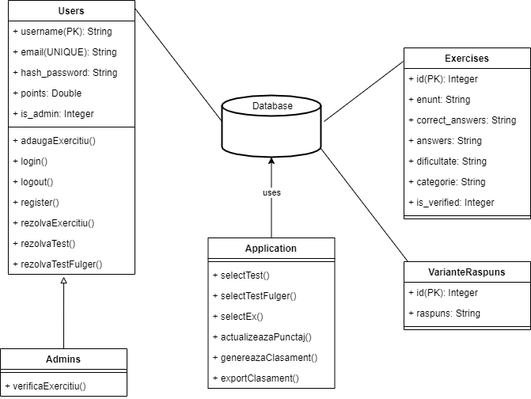
Diagrama aplicației MEGa
2.2 Funcționalitățile produsului
Aplicația dispune de următoarele funcționalități: crearea unui cont, logarea în aplicație cu un cont existent, dispunerea suportului teoretic, al exercițiilor, testelor și al chestionarelor temporizate, vizualizarea clasamentului în timp real, adăugarea
de exerciții noi. De asemenea, aplicația pune la dispoziția utilizatorului o zonă de relaxare disponibilă pe pagina principală.
2.3 Clase de utilizatori și caracteristici
Utilizatorii aplicației se împart în două categorii: utilizatori obișnuiți și utilizatori de tip admin, reprezentați de autorii aplicației și eventual potențialii contribuitori, ce au ca scop dezvoltarea aplicației.
2.4 Mediul de operare
Aplicația este concepută pentru a fi utilizată de pe orice dispozitiv ce dispune de un browser web:
Care suportă HTML5:
Internet Explorer 9 & 10.
Firefox de la versiunea 7 în sus.
Chrome de la versiunea 14 în sus.
Safari de la versiunea 5 în sus.
Opera de la versiunea 11 în sus.
Mobile Safari de la versiunea 3.2 în sus.
Opera Mobile de la versiunea 5 în sus.
Android de la versiunea 2.1 în sus.
Care suportă CSS.
Care suportă JavaScript.
Care suportă PHP.
Site-ul este adaptat pentru rezoluții pornind de la lățimea de 320px.
2.5 Design și constrângeri de implementare
Interfața este configurată folosind HTML5, CSS, JavaScript, AJAX și KaTeX pentru afișarea conținutului matematic. Partea de backend este implementată folosind PHP și JavaScript, interogările către baza de date fiind implementate în PostgreSQL.
2.6 Documentația utilizatorului
Documentația utilizatorului privind exercițiile poate fi regăsită în secțiunea teoretică a fiecărei categorii.
2.7 Ipoteze și dependențe
Modul de funcționalitate al aplicației web poate fi alterat în cazul în care browser-ul de pe care este accesată nu suportă HTML5, CSS, JavaScript, PHP sau KaTeX. De asemenea, interfața poate suferi schimbări majore în cazul în care este accesată de pe
un dispozitiv cu rezoluție prea mică (sub 320px lățime), sau prea mare (ex: un televizor cu rezoluție mare).
3. Cerințe de interfață externă
3.1 Interfețele utilizatorului
Pagina principală
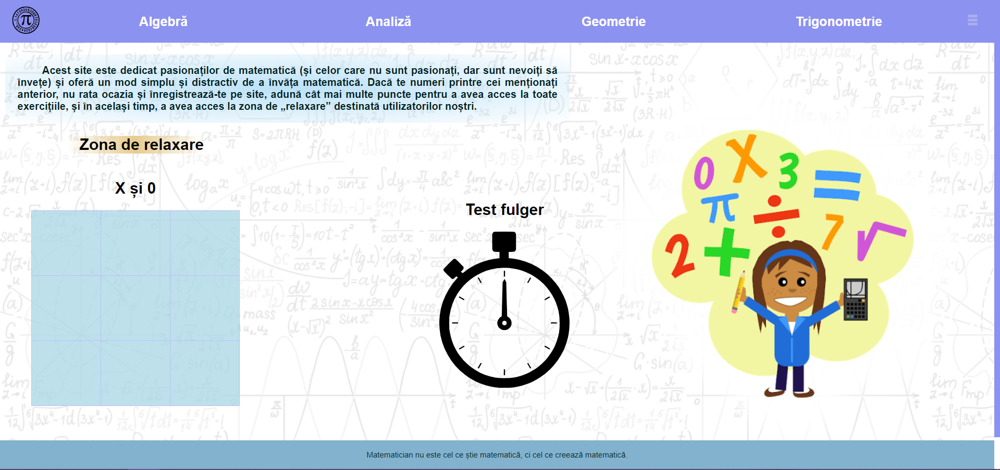
Pagina principală
La accesarea aplicației utilizatorul este direcționat către pagina principală. Aici el dispune de zona de relaxare ce constă într-un joc de X și 0 disputat cu calculatorul, poate să acceseze orice secțiune a site-ului(algebră, analiză, geometrie, trigonometrie,
logare/delogare, înregistrare, adăugare exercițiu, testul fulger).
Categorie - Analiză
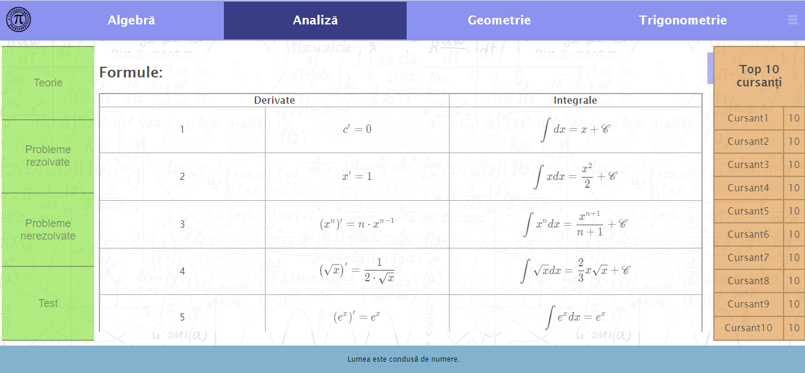
Pagina Analiză-Teorie
În secțiunea de teorie, utilizatorul își va împrospăta cunoștințele categoriei curente.
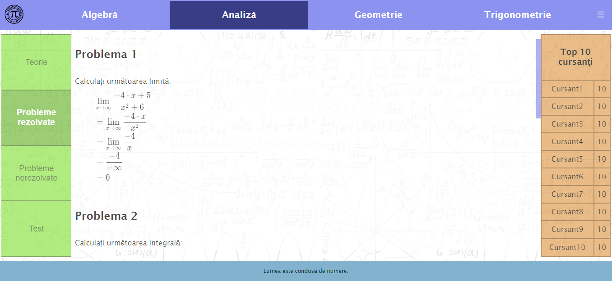
Pagina Analiză-Probleme rezolvate
În secțiunea de probleme rezolvate, utilizatorul are posibilitatea să vadă niște modele de exerciții rezolvate, ajutându-l în dobândirea de cunoștințe noi.
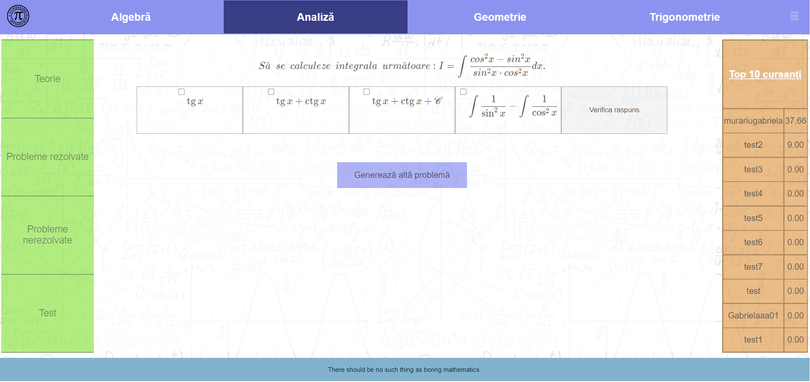
Pagina Analiză-Probleme nerezolvate
În secțiunea de probleme nerezolvate, utilizatorul are posibilitatea de a rezolva exerciții. Acesta va primi un exercițiu de rezolvat, urmând să bifeze variantele sale de răspuns, aplicația calculându-i punctajul după verificare și semnalând eventualele
greșeli. În cazul în care utilizatorul este conectat, punctajul obținut după rezolvarea exercițiului va fi adăugat la punctajul total.
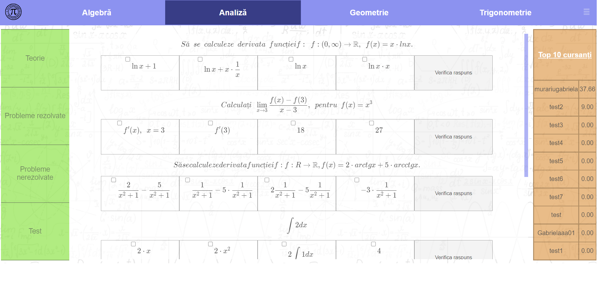
Pagina Analiză-Test
În secțiunea de test, utilizatorul are posibilitatea de a rezolva un test contând în cinci exerciții din categoria curentă. Trebuie să-și verifice răspunsul la fiecare exercițiu în parte apăsând pe butonul "Verifică răspuns". Utilizatorul poate sau nu
să rezolve toate exercițiile, punctajul total al testului fiind calculat apăsând butonul "Calculează punctaj test".
Înregistrare
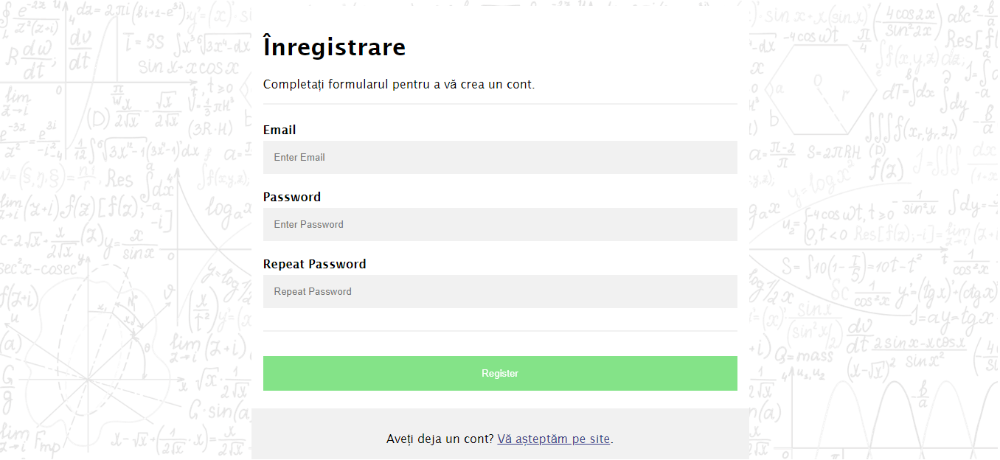
Formular înregistrare
În pagina de înregistrare utilizatorul va primi un formular ce trebuie completat cu datele preferențiale. În cazul în care email-ul/usernameul este deja folosit, dar și în cazul în care parolele nu coincid, acesta va fi avertizat de către aplicație. Odată
înregistrat, utilizatorul va fi redirecționat către pagina principală, având posibilitatea de a se loga.
Adăugare exercițiu
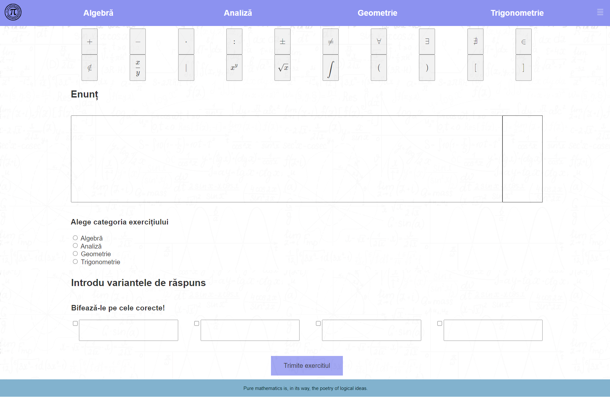
Formular adăugare exercițiu
În pagina de adăugare exercițiu, utilizatorul poate să adauge un exercițiu nou. Poate face aceasta prin completarea tuturor câmpurilor. Pentru variantele de răspuns, utilizatorul trebuie să bifeze variantele corecte. În cazul în care cel puțin un câmp
nu este completat, aplicația va da un avertisment și exercițiul nu va fi adăugat.
Test fulger
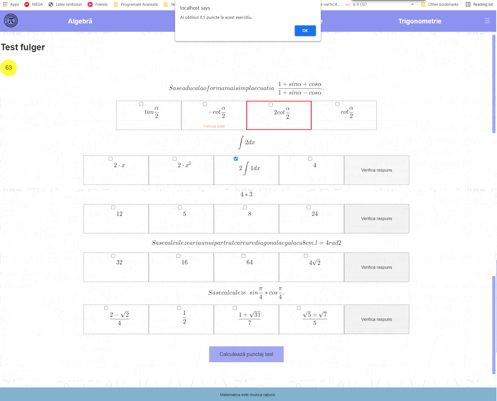
Test fulger
În pagina destinată testului fulger, utilizatorul are la dispozitie 80 de secunde pentru a rezolva cele cinci exerciții primite din cele patru categorii (algebră, analiză, geometrie, trigonometrie). Se va proceda ca în cazul unui dest dintr-o anumită
categorie. În plus, în cazul în care timpul a expirat, aplicația va avertiza utilizatorul și-i va calcula automat punctajul obținut. Dacă utilizatorul este logat, punctajul obținut va fi adăugat la punctajul total. La finalizarea
testului sau după expirarea timpului, utilizatorul va fi redirecționat către pagina principală.
Verificare exercițiu
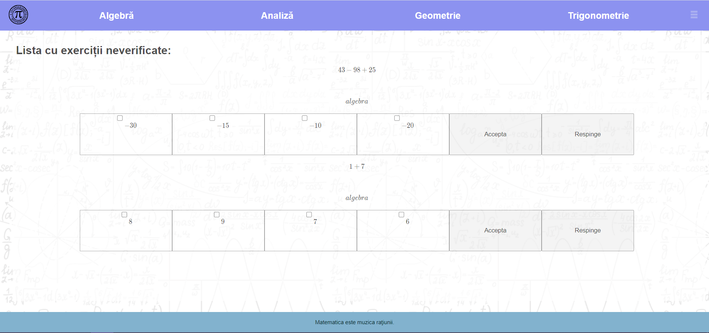
Verificare exercițiu
Pagina destinată verificării de exerciții este disponibilă doar pentru acei utilizatori care sunt administratori. Administratorului îi va fi afișată lista cu exercițiile propuse de către utilizatori, neverificate la momentul curent. Un administrator poate
accepta sau nu exercițiile propuse de către utilizatori. Dacă acesta alege să accepte un anumit exercițiu, acesta va fi dat către rezolvare utilizatorilor. Dacă acesta alege să îl respingă, exercițiul va fi șters.
3.2 Interfețe hardware
Aplicația poate interacționa cu tablete, telefoane mobile, cât și computere. Un exemplu de vizualizare a unei pagini de pe un dispozitiv mobil.
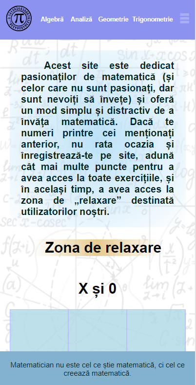
Interfață pagina principală de pe un dispozitiv mobil
3.3 Interfețe software
Aplicația va comunica direct cu o bază de date PostgreSQL prin intermediul limbajelor JavaScript și PHP pentru a introduce și a extrage informațiile clienților și exercițiilor. Formulele și exercițiile matematice sunt afișate într-un format matematic,
KaTeX.
3.4 Interfețe de comunicare
Protocolul utilizat în aplicație este HTTP.
4. Caracteristici ale sistemului
4.1 Generarea exercițiilor și testelor
4.1.1 Descriere și gradul de prioritate
Fiecare utilizator primește o serie de exerciții inițiale, iar prin rezolvarea lor acesta va fi notificat de aplicație cu punctajul obținut. Dacă utilizatorul este logat, punctajul obținut va fi adăugat la punctajul total.
Generarea de exerciții noi are o prioritate mare pe site deoarece stimulează utilizatorii să-și verifice cunoștințele acumulate.
4.1.2 Stimul/Răspuns
Utilizatorul răspunde înterbărilor prin bifarea răspunsurilor considerate corecte, iar sistemul verifică în baza de date corespunzătoare variantele de răspuns.
4.1.3 Cerințe funcționale
Sistemul semnalează răspunsurile greșite și pe cele corecte dar nebifate de utilizator.
4.2 Generarea clasamentelor
4.2.1 Descriere și gradul de prioritate
Fiecare pagină corespunzătoare unei ramure matematice dispune de clasamentul celor mai buni 10 utilizatori ai aplicației.
Dispunerea clasamentelor în timp real are o prioritate mare pe site deoarece stimulează competitivitatea utilizatorilor prin dorința de a ocupa un loc cât mai bun în clasament.
4.2.2 Stimul/Răspuns
Utilizatorul acumulează punctaje de la diferite exerciții rezolvate, iar după fiecare test sau exercițiu rezolvat clasamentul este actualizat.
4.2.3 Cerințe funcționale
Sistemul generează clasamentul în timp real.
4.3 Generarea chestionarelor
4.3.1 Descriere și gradul de prioritate
Pe pagina principală, zona de relaxare dispune de un buton ce are ca scop generarea unui chestionar temporizat, de tip grilă. Chestionarul temporizat este ca un test fulger.
Chestionarul temporizat are un grad de importanță mare deoarece stimulează gandirea rapidă a utilizatorului prin temporizarea testului.
4.3.2 Stimul/Răspuns
Utilizatorul are un anumit timp alocat testului și răspunde prin bifarea variantelor considerate corecte, iar sistemul verifică în baza de date corectitudinea exercițiului, calculându-i punctajul.
4.3.3 Cerințe funcționale
Sistemul cronometrează testul și calculează punctajul acumulat. După fiecare exercițiu verificat, aplicația semnalează răspunsurile greșite și pe cele corecte dar nebifate.
4.4 Joc X și 0
4.4.1 Descriere și gradul de prioritate
Zona de relaxare a paginii principale conține un joc X și 0. Jocul se desfășoară între utilizator și calculator.
Jocul X și 0 are o prioritate medie pe site-ul nostru deoarece conferă un mod de relaxare pentru utilizatori.
4.4.2 Stimul/Răspuns
Utilizatorul are întotdeauna dreptul de a muta primul, urmând ca sistemul sa calculeze următoarea mutare a calculatorului.
4.4.3 Cerințe funcționale
Sistemul calculează mutarea calculatorului. Jocul se încheie atunci când unul dintre cei doi ajunge la 3 piese succesive pe verticală, orizontală sau diagonală, sau atunci când toate pozițiile de pe tablă sunt ocupate.
4.5 Formular de înregistrare
4.5.1 Descriere și gradul de prioritate
Utilizatorul are opțiunea de a se înregistra pe site pentru a putea dispune de toate funcționalitățile acestuia. Acesta trebuie să completeze un formular, după completarea lui fiind redirecționat către pagina principală.
Gradul de prioritate al acestei funcțiuni este înalt, deoarece odată logat utilizatorul poate să beneficieze de toate funcționalitățile aplicației.
4.5.2 Stimul/Răspuns
Utilizatorul trebuie să completeze formularul de înregistrare, beneficiind pe urmă de toate funcționalitățile.
4.5.3 Cerințe funcționale
Sistemul primește datele introduse de utilizator, se asigură că emailul și usernameul nu există în baza de date, cât și că parolele introduse de utilizator coincid. Când toate datele sunt corecte, utilizatorul va avea un cont creat.
4.6 Adăugare exercițiu
4.6.1 Descriere și gradul de prioritate
Utilizatorul are opțiunea de a introduce exerciții noi, trimise spre verificare. Adăugând exerciții, utilizatorii vor beneficia de o varietate mai mare de exerciții, sporind astfel competivitatea.
Gradul de prioritate al acestei funcțiuni este înalt, deoarece utilizatorii pot aduce beneficii aplicației, dezvoltând-o prin adăugarea de noi exerciții.
4.6.2 Stimul/Răspuns
Utilizatorul trebuie să completeze formularul de introducere a unui exercițiu, urmând a fi trimise administratorilor spre verificare.
4.6.3 Cerințe funcționale
Administratorului îi vor fi afișate exercițiile introduse, acesta având posibilitatea de a le accepta sau de a le refuza.
4.7 Verificare exercițiu
4.7.1 Descriere și gradul de prioritate
Este o pagină destinată administratorilor, aceștia ocupându-se de administrarea exercițiilor introduse de către utilizatori.
Gradul de prioritate al acestei funcțiuni este înalt, utilizatorii vor aștepta ca exercițiile lor să fie validate, administratorul având ca responsabilitate verificarea lor într-un timp cât mai scurt.
4.7.2 Stimul/Răspuns
Administratorul va accesa pagina de verificare exercițiu, unde vor fi afișate exercițiile neverificate la momentul actual.
4.7.3 Cerințe funcționale
Administratorul va accepta sau nu exercițiile propuse de către utilizatori.
5. Alte cerințe nefuncționale
5.1 Cerințe de performanță
Aplicația are ca scop verificarea răspunsurilor utilizatorilor într-un timp cât mai scurt, generarea clasamentului în timp real, calcularea mutărilor calculatorului în jocul de X și 0 cât mai rapid, calcularea automată a punctajului utilizatorului în
secțiunea de test fulger în cazul în care timpul a expirat..
5.2 Cerințe de siguranță
Nici o pierdere sau deteriorare a datelor nu poate avea loc folosind acest site deoarece totul este generat de sistem.
5.3 Cerințe de securitate
Parolele utilizatorilor vor fi stocate în baza de date encriptate, astfel prevenind furturile de date. Singurele informații afișate despre utilizatori pe site vor fi username-ul și punctajul corespunzător, pentru a putea realiza clasamentul.
5.4 Calitatea atributelor software
Mentenanța site-ului va fi efectuată de către admini. Corectitudinea rezultatelor exercițiilor va fi verificată înaintea stocării acestora în baza de date. Interfața este prietenoasă, astfel fiind ușor de utilizat.
5.5 Reguli de afacere
Singurele persoane care pot actualiza funcționalitățile site-ului sunt autorii și posibilii contribuitori, aleși de autori.
Alte cerințe
Baza de date utilizată pentru stocarea datelor utilizatorilor și verificarea unicității adreselor de email nou returnate de formularul de înregistrare.
Baza de date utilizată pentru stocarea exercițiilor propuse spre rezolvare, cât și a raspunsurilor corecte ale acestora.
Un algoritm ce are ca scop calcularea mutărilor calculatorului în funcție de dificultatea aleasă de utilizator și mutările acestuia.